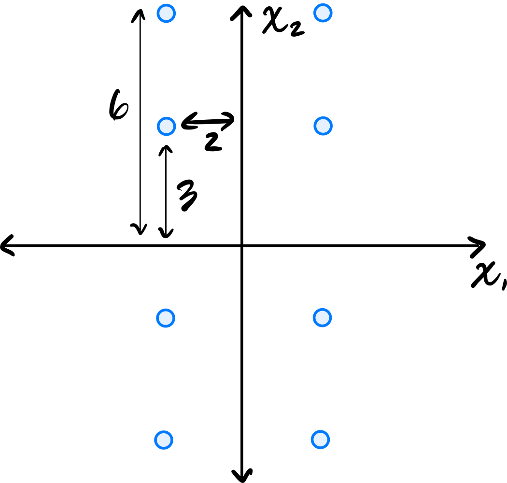

Problems tagged with "pca"
Problem #58
Tags: pca, projection, quiz-04, dimensionality reduction, lecture-06
Suppose the direction of maximum variance in a centered data set is
Let \(\vec x = (2, 4)^T\) be a centered data point.
Reduce \(\vec x\) to one dimension by projecting onto the direction of maximum variance. What is the new feature \(z\) obtained from this projection?
Solution
\(z = 3\sqrt 2\).
The projection onto the direction of maximum variance is given by the dot product with \(\vec u\):
Problem #59
Tags: pca, projection, quiz-04, dimensionality reduction, lecture-06
Suppose the direction of maximum variance in a centered data set is
Let \(\vec x = (2, 1, 2)^T\) be a centered data point.
Reduce \(\vec x\) to one dimension by projecting onto the direction of maximum variance. What is the new feature \(z\) obtained from this projection?
Solution
\(z = 3\).
The projection onto the direction of maximum variance is given by the dot product with \(\vec u\):
Problem #60
Tags: pca, projection, quiz-04, dimensionality reduction, lecture-06
Suppose the direction of maximum variance in a centered data set is
Let \(\vec x = (3, 1, -1, 5)^T\) be a centered data point.
Reduce \(\vec x\) to one dimension by projecting onto the direction of maximum variance. What is the new feature \(z\) obtained from this projection?
Solution
\(z = 4\).
The projection onto the direction of maximum variance is given by the dot product with \(\vec u\):
Problem #61
Tags: pca, centering, covariance, quiz-04, lecture-06
Center the data set:
Solution
First, compute the mean:
Then subtract the mean from each data point:
Problem #62
Tags: pca, centering, covariance, quiz-04, lecture-06
Center the data set:
Solution
First, compute the mean:
Then subtract the mean from each data point:
Problem #69
Tags: lecture-06, quiz-04, eigenvalues, pca
Let \(C\) be the sample covariance matrix of a centered data set \(\mathcal X\) consisting of five points. Suppose that PCA is performed to reduce the dimensionality of \(\mathcal X\) to one dimension. The results are:
What is the largest eigenvalue of \(C\)?
Solution
\(66/5\) The largest eigenvalue of \(C\) equals the variance of the projected data along the first principal component. This data has mean zero (we can verify: \((4 + 3 - 2 + 1 - 6)/5 = 0\)). So the variance is simply:
Problem #70
Tags: lecture-06, quiz-04, eigenvectors, pca
Consider the data set shown below:

Which of the following could possibly be the top eigenvector of the data's sample covariance matrix?
Solution
\((3, 1)^T\) The top eigenvector of the covariance matrix points in the direction of greatest variance. Looking at the scatter plot, the data is elongated along a direction that has a positive slope, rising more in the \(x_1\) direction than the \(x_2\) direction. The vector \((3, 1)^T\) points roughly in this direction.
\((1, 0)^T\) and \((0, 1)^T\) are along the axes, which don't align with the data's elongation. \((1, 1)^T\) has too steep a slope compared to the apparent direction of the data.
Problem #71
Tags: lecture-07, quiz-04, pca
Let \(\vec{x}^{(1)}\) and \(\vec{x}^{(2)}\) be two points in a centered data set \(\mathcal{X}\) of 100 points in \(d\) dimensions. Suppose PCA is performed, but dimensionality is not reduced; that is, each point \(\vec{x}^{(i)}\) is transformed to the vector \(\vec{z}^{(i)} = U \vec{x}^{(i)}\), where \(U\) is a matrix whose \(d\) rows are the (orthonormal) eigenvectors of the data covariance matrix.
True or False: \(\|\vec{x}^{(1)} - \vec{x}^{(2)}\| = \|\vec{z}^{(1)} - \vec{z}^{(2)}\|\). That is, the distance between \(\vec{z}^{(1)}\) and \(\vec{z}^{(2)}\) in the new data set is necessarily the same as the distance between their corresponding points in the original data set.
Solution
True.
There's a mathematical way of seeing this, and an intuitive way.
Let's start with the intuitive way. We saw in lecture that when we perform PCA without reducing dimensionality, we are simply rotating the data to align with the directions of maximum variance (in the process, "decorrelating" the features). A rotation does not change distances between points, so the distances remain the same. This is illustrated in the figure below. On the left is the original data, and on the right is the same data after PCA transformation (without dimensionality reduction). Notice that the shape of the data hasn't change, and you can find two points in the left plot and see that their distance is the same as the corresponding points in the right plot.
Now for the mathematical way. We want to show that:
We know that \(\vec{z}^{(i)} = U \vec{x}^{(i)}\), so we can rewrite the right-hand side:
Remember that the norm of a vector \(\vec{v}\) can be expressed as:
So:
In the middle of this calculation, we used the fact that \(U\) is an orthonormal matrix, so \(U^T U = I\).
Problem #77
Tags: lecture-06, quiz-04, eigenvalues, pca
Consider the data set shown below:

As before, the symmetry across both axes is exact.
Let \(C\) be the empirical covariance matrix. What is the largest eigenvalue of \(C\)?
Solution
\(180/8\) Due to the symmetry across both axes, the covariance matrix is diagonal (the off-diagonal entries are zero). The diagonal entries are the variances in the \(x_1\) and \(x_2\) directions respectively.
From the image, we can read off the coordinates of the 8 points. Due to symmetry, we have points at approximately \((\pm 3, \pm 3)\) and \((\pm 3, \pm 3)\) forming a symmetric pattern.
The largest eigenvalue equals the larger of the two variances. Computing the variance in the direction with greater spread gives \(180/8\).
Problem #78
Tags: lecture-06, quiz-04, eigenvalues, pca
Let \(\mathcal X = \{\vec{x}^{(1)}, \ldots, \vec{x}^{(100)}\}\) be a data set of \(100\) points in 50 dimensions. Let \(\lambda\) be the top eigenvalue of the covariance matrix for \(\mathcal X\).
From this data set, we will construct two data sets \(\mathcal A = \{\vec{a}^{(1)}, \ldots, \vec{a}^{(100)}\}\) and \(\mathcal B = \{\vec{b}^{(1)}, \ldots, \vec{b}^{(100)}\}\) in 25 dimensions, by setting \(\vec{a}^{(i)}\) to be the first 25 coordinates of \(\vec{x}^{(i)}\), and setting \(\vec{b}^{(i)}\) to be the remaining 25 coordinates of \(\vec{x}^{(i)}\).
Let \(\lambda_a\) and \(\lambda_b\) be the top eigenvalues of the covariance matrices for \(\mathcal A\) and \(\mathcal B\), respectively.
True or False: it must be the case that \(\lambda = \max\{\lambda_a, \lambda_b\}\).
Solution
False.
The top eigenvalue \(\lambda\) of the full covariance matrix represents the maximum variance in any direction in the 50-dimensional space. This direction may involve correlations between the first 25 and last 25 coordinates.
When we split the data, \(\lambda_a\) captures only the maximum variance within the first 25 dimensions, and \(\lambda_b\) captures only the maximum variance within the last 25 dimensions. Neither can capture variance in directions that span both coordinate sets.
As a counterexample, consider data where all variance is along the direction \((1, 0, \ldots, 0, 1, 0, \ldots, 0)^T\)(a unit vector with components in both the first 25 and last 25 coordinates). The original data would have \(\lambda > 0\), but both \(\mathcal A\) and \(\mathcal B\) would have smaller top eigenvalues, so \(\lambda > \max\{\lambda_a, \lambda_b\}\).
Problem #79
Tags: pca, dimensionality-reduction, eigenvectors, quiz-04, lecture-06
Let \(C\) be the sample covariance matrix of a data set in \(\mathbb{R}^3\), and suppose \(\vec{u}^{(1)}, \vec{u}^{(2)}, \vec{u}^{(3)}\) are orthonormal eigenvectors of \(C\) with eigenvalues \(\lambda_1 = 9, \lambda_2 = 4, \lambda_3 = 1\), respectively, where:
Suppose a data point is \(\vec{x} = \begin{pmatrix} 3 \\ 6 \\ 6 \end{pmatrix}\).
If PCA is performed to reduce the dimensionality from 3 to 2, what is the new representation of \(\vec{x}\)?
Solution
\(\begin{pmatrix} 8 \\ 4 \end{pmatrix}\) In PCA, to reduce from \(d\) dimensions to \(k\) dimensions, we project each data point onto the top \(k\) eigenvectors (those with the largest eigenvalues).
Here, the top 2 eigenvectors are \(\vec{u}^{(1)}\)(with \(\lambda_1 = 9\)) and \(\vec{u}^{(2)}\)(with \(\lambda_2 = 4\)).
The new representation is obtained by computing the dot product of \(\vec{x}\) with each of the top \(k\) eigenvectors:
Therefore, the new representation is:
Problem #80
Tags: pca, dimensionality-reduction, eigenvectors, quiz-04, lecture-06
Let \(C\) be the sample covariance matrix of a data set in \(\mathbb{R}^4\), and suppose \(\vec{u}^{(1)}, \vec{u}^{(2)}, \vec{u}^{(3)}, \vec{u}^{(4)}\) are orthonormal eigenvectors of \(C\) with eigenvalues \(\lambda_1 = 16, \lambda_2 = 9, \lambda_3 = 4, \lambda_4 = 1\), respectively, where:
Suppose a data point is \(\vec{x} = \begin{pmatrix} 3 \\ 3 \\ 6 \\ 6 \end{pmatrix}\).
If PCA is performed to reduce the dimensionality from 4 to 2, what is the new representation of \(\vec{x}\)?
Solution
\(\begin{pmatrix} 9 \\ 1 \end{pmatrix}\) In PCA, to reduce from \(d\) dimensions to \(k\) dimensions, we project each data point onto the top \(k\) eigenvectors (those with the largest eigenvalues).
Here, the top 2 eigenvectors are \(\vec{u}^{(1)}\)(with \(\lambda_1 = 16\)) and \(\vec{u}^{(2)}\)(with \(\lambda_2 = 9\)).
The new representation is obtained by computing the dot product of \(\vec{x}\) with each of the top \(k\) eigenvectors:
Therefore, the new representation is:
Problem #81
Tags: pca, dimensionality-reduction, eigenvectors, quiz-04, lecture-06
Let \(C\) be the sample covariance matrix of a data set in \(\mathbb{R}^5\), and suppose \(\vec{u}^{(1)}, \vec{u}^{(2)}, \vec{u}^{(3)}, \vec{u}^{(4)}, \vec{u}^{(5)}\) are orthonormal eigenvectors of \(C\) with eigenvalues \(\lambda_1 = 25, \lambda_2 = 16, \lambda_3 = 9, \lambda_4 = 4, \lambda_5 = 1\), respectively, where:
Suppose a data point is \(\vec{x} = \begin{pmatrix} 3 \\ 6 \\ 6 \\ 3 \\ 2 \end{pmatrix}\).
If PCA is performed to reduce the dimensionality from 5 to 3, what is the new representation of \(\vec{x}\)?
Solution
\(\begin{pmatrix} 9 \\ 2 \\ 2 \end{pmatrix}\) In PCA, to reduce from \(d\) dimensions to \(k\) dimensions, we project each data point onto the top \(k\) eigenvectors (those with the largest eigenvalues).
Here, the top 3 eigenvectors are \(\vec{u}^{(1)}\)(with \(\lambda_1 = 25\)), \(\vec{u}^{(2)}\)(with \(\lambda_2 = 16\)), and \(\vec{u}^{(3)}\)(with \(\lambda_3 = 9\)).
The new representation is obtained by computing the dot product of \(\vec{x}\) with each of the top \(k\) eigenvectors:
Therefore, the new representation is:
Problem #82
Tags: lecture-06, dimensionality-reduction, eigenvectors, pca
Consider the following data set of 5 points in \(\mathbb{R}^3\):
Perform PCA on this data set to reduce the dimensionality from 3 to 2. What are the new representations of each data point?
Note: You are not expected to compute the eigenvalues and eigenvectors by hand. Use software (such as numpy.linalg.eigh) to find them.
Solution
First, we form the data matrix and compute the sample covariance matrix:
>>> import numpy as np
>>> X = np.array([
... [3, 1, 2],
... [-1, 2, 0],
... [2, -1, 1],
... [-2, 0, -1],
... [-2, -2, -2]
... ])
>>> mu = X.mean(axis=0)
>>> Z = X - mu
>>> C = 1 / len(X) * Z.T @ Z
Next, we compute the eigendecomposition of \(C\):
>>> eigenvalues, eigenvectors = np.linalg.eigh(C)
>>> idx = eigenvalues.argsort()[::-1]# sort descending
>>> eigenvalues = eigenvalues[idx]
>>> eigenvectors = eigenvectors[:, idx]
>>> eigenvalues
array([6.49, 1.89, 0.01])
To reduce to 2 dimensions, we project onto the top 2 eigenvectors:
>>> U2 = eigenvectors[:, :2]
>>> Z_new = Z @ U2
>>> Z_new
array([[-3.74, -0.13],
[ 0.34, -2.21],
[-1.93, 1.51],
[ 2.16, -0.57],
[ 3.17, 1.40]])
The new representations are (rounded to two decimal places):
Note: The signs of the eigenvectors are not unique; flipping the sign of an eigenvector will flip the sign of the corresponding component in the new representation.
Problem #83
Tags: lecture-06, dimensionality-reduction, eigenvectors, pca
Consider the following data set of 5 points in \(\mathbb{R}^4\):
Perform PCA on this data set to reduce the dimensionality from 4 to 2. What are the new representations of each data point?
Note: You are not expected to compute the eigenvalues and eigenvectors by hand. Use software (such as numpy.linalg.eigh) to find them.
Solution
First, we form the data matrix and compute the sample covariance matrix:
>>> import numpy as np
>>> X = np.array([
... [2, 1, 3, 0],
... [0, -2, 1, 1],
... [-1, 0, -1, 2],
... [1, 2, 0, -1],
... [-2, -1, -3, -2]
... ])
>>> mu = X.mean(axis=0)
>>> Z = X - mu
>>> C = 1 / len(X) * Z.T @ Z
Next, we compute the eigendecomposition of \(C\):
>>> eigenvalues, eigenvectors = np.linalg.eigh(C)
>>> idx = eigenvalues.argsort()[::-1]# sort descending
>>> eigenvalues = eigenvalues[idx]
>>> eigenvectors = eigenvectors[:, idx]
>>> eigenvalues
array([6.35, 2.57, 1.06, 0.02])
To reduce to 2 dimensions, we project onto the top 2 eigenvectors:
>>> U2 = eigenvectors[:, :2]
>>> Z_new = Z @ U2
>>> Z_new
array([[-3.68, 0.43],
[-0.40, -2.19],
[ 0.96, -1.44],
[-0.92, 2.18],
[ 4.03, 1.02]])
The new representations are (rounded to two decimal places):
Note: The signs of the eigenvectors are not unique; flipping the sign of an eigenvector will flip the sign of the corresponding component in the new representation.
Problem #84
Tags: lecture-06, dimensionality-reduction, eigenvectors, pca
Consider the following data set of 5 points in \(\mathbb{R}^4\):
Perform PCA on this data set to reduce the dimensionality from 4 to 3. What are the new representations of each data point?
Note: You are not expected to compute the eigenvalues and eigenvectors by hand. Use software (such as numpy.linalg.eigh) to find them.
Solution
First, we form the data matrix and compute the sample covariance matrix:
>>> import numpy as np
>>> X = np.array([
... [1, 2, 0, 3],
... [-1, 0, 2, 1],
... [2, -1, 1, 0],
... [0, 1, -2, -2],
... [-2, -2, -1, -2]
... ])
>>> mu = X.mean(axis=0)
>>> Z = X - mu
>>> C = 1 / len(X) * Z.T @ Z
Next, we compute the eigendecomposition of \(C\):
>>> eigenvalues, eigenvectors = np.linalg.eigh(C)
>>> idx = eigenvalues.argsort()[::-1]# sort descending
>>> eigenvalues = eigenvalues[idx]
>>> eigenvectors = eigenvectors[:, idx]
>>> eigenvalues
array([5.72, 2.28, 1.34, 0.26])
To reduce to 3 dimensions, we project onto the top 3 eigenvectors:
>>> U3 = eigenvectors[:, :3]
>>> Z_new = Z @ U3
>>> Z_new
array([[-3.45, -1.17, 0.67],
[-1.10, 1.83, 1.02],
[-0.70, 0.83, -2.20],
[ 1.84, -2.31, -0.10],
[ 3.40, 0.82, 0.61]])
The new representations are (rounded to two decimal places):
Note: The signs of the eigenvectors are not unique; flipping the sign of an eigenvector will flip the sign of the corresponding component in the new representation.
Problem #85
Tags: pca, eigenvectors, quiz-04, dimensionality reduction, lecture-06
Suppose \(C\) is a \(3 \times 3\) sample covariance matrix for a data set \(\mathcal X\), and that the top two eigenvectors of \(C\) are:
with eigenvalues \(\lambda_1 = 10\) and \(\lambda_2 = 4\), respectively.
Let \(\vec x = (1, 2, 3)^T\) be the coordinates of \(\vec x\) with respect to the standard basis. Let \(\vec z\) be the result of applying PCA to reduce the dimensionality of \(\vec x\) to 2. What is \(\vec z\)?
Solution
\(\vec z = \left(\frac{1}{\sqrt 2}, \frac{6}{\sqrt 3}\right)^T\).
We compute \(\vec z\) by projecting \(\vec x\) onto each eigenvector:
Problem #86
Tags: reconstruction error, pca, covariance, eigenvalues, lecture-07, quiz-04
Suppose PCA is used to reduce the dimensionality of the centered data shown below from 2 dimensions to 1.

Part 1)
What will be the reconstruction error?
Solution
\(52\).
The first thing to figure out is what the first principal component (first eigenvector of the covariance matrix) is, since this is the direction onto which the data will be projected. Remember that the first eigenvector points in the direction of maximum variance, and in this plot that appears to be straight up (or down). Thus, the first principal component is \((0, 1)^T\)(or \((0, -1)^T\)).
Next, we imagine projecting all of the data onto this line. Since the first eigenvector is vertical, all of the data is projected onto the \(x_2\)-axis. In the process, every point's \(x_1\)-coordinate is lost, and becomes zero, while the \(x_2\)-coordinate remains unchanged. The figure below shows these projected points in red (note that each red point is actually two points on top of each other, since both \((x_1, x_2)^T\) and \((-x_1, x_2)^T\) project to \((0, x_2)^T\)).

To compute the reconstruction error, we find the squared distance between each point's original position and its projected position. Starting with the upper-right-most point at \((3, 5)^T\), its projection is \((0, 5)^T\), and the squared distance between these two points is \((3 - 0)^2 + (5 - 5)^2 = 9\). For the point at \((2, 1)^T\), its projection is \((0, 1)^T\), and the squared distance is \((2 - 0)^2 + (1 - 1)^2 = 4\).
We could continue, manually calculating the squared distance for each point, but the symmetry of the data allows us to be more efficient. There are four points in the data set that are exactly like the first we just considered and which will have a reconstruction error of 9 each. Similarly, there are four points like the second we considered, each with a reconstruction error of 4. Therefore, the total reconstruction error is:
Part 2)
What is the smallest eigenvalue of the data's covariance matrix?
Solution
\(13/2\).
Remember that the smallest eigenvalue of the data's covariance matrix is equal to the variance of the second PCA feature. That is, it is the variance in the direction of the second principal component (the second eigenvector of the covariance matrix), which in this case is the vector \((1, 0)^T\)(or \((-1, 0)^T\)).
The variance of the data in this direction can be computed by
where \(x_i\) is the \(x_1\)-coordinate of the \(i\)-th data point, \(\mu\) is the mean of all the \(x_1\)-coordinates, and \(n\) is the number of data points. Since hte data is centered, \(\mu = 0\). Therefore, we just need to compute the average of the squared \(x_1\)-coordinates.
Reading these off, we have four points whose \(x_1\)-coordinate is \(3\) or \(-3\), and four points whose \(x_1\)-coordinate is \(2\) or \(-2\). So the variance is:
Therefore, the smallest eigenvalue of the data's covariance matrix is \(13/2\).
Problem #87
Tags: pca, eigenvectors, quiz-04, dimensionality reduction, lecture-06
Suppose \(C\) is a \(3 \times 3\) sample covariance matrix for a data set \(\mathcal X\), and that the top two eigenvectors of \(C\) are:
with eigenvalues \(\lambda_1 = 5\) and \(\lambda_2 = 2\), respectively.
Let \(\vec x = (3,2,1)^T\) be the coordinates of \(\vec x\) with respect to the standard basis. Let \(\vec z\) be the result of applying PCA to reduce the dimensionality of \(\vec x\) to 2. What is \(\vec z\)?
Solution
\(\vec z = \left(0, \frac{3}{\sqrt 2}\right)^T\).
We compute \(\vec z\) by projecting \(\vec x\) onto each eigenvector:
Problem #88
Tags: pca, covariance, eigenvalues, lecture-07, quiz-04
Consider the centered data set shown below. The data is symmetric across both axes.

Let \(C\) be the empirical covariance matrix. What is the largest eigenvalue of \(C\)?
Solution
\(45/2\).
Remember that the largest eigenvalue of the data's covariance matrix is equal to the variance of the first PCA feature. That is, it is the variance in the direction of the first principal component (the first eigenvector of the covariance matrix).
Since the data is symmetric across both axes, the eigenvectors of the covariance matrix are aligned with the coordinate axes. From the figure, the data is more spread out vertically than horizontally, so the first principal component is the vector \((0, 1)^T\)(or \((0, -1)^T\)).
The variance of the data in this direction can be computed by
where \(x_i\) is the \(x_2\)-coordinate of the \(i\)-th data point, \(\mu\) is the mean of all the \(x_2\)-coordinates, and \(n\) is the number of data points. Since the data is centered, \(\mu = 0\). Therefore, we just need to compute the average of the squared \(x_2\)-coordinates.
Reading these off, we have four points whose \(x_2\)-coordinate is \(6\) or \(-6\), and four points whose \(x_2\)-coordinate is \(3\) or \(-3\). So the variance is:
Therefore, the largest eigenvalue of the data's covariance matrix is \(45/2\).
Problem #89
Tags: lecture-07, eigenvalues, variance, pca
Let \(\mathcal X = \{\vec{x}^{(1)}, \ldots, \vec{x}^{(100)}\}\) be a set of 100 points in \(3\) dimensions. The variance in the direction of \(\hat{e}^{(1)}\) is 20, the variance in the direction of \(\hat{e}^{(2)}\) is 12, and the variance in the direction of \(\hat{e}^{(3)}\) is 10.
Suppose PCA is performed, but dimensionality is not reduced; that is, each point \(\vec{x}^{(i)}\) is transformed to the vector \(\vec{z}^{(i)} = U \vec{x}^{(i)}\), where \(U\) is a matrix whose \(3\) rows are the (orthonormal) eigenvectors of the data covariance matrix. Let \(\mathcal Z = \{\vec{z}^{(1)}, \ldots, \vec{z}^{(100)}\}\) be the resulting data set.
Suppose \(C\) is the covariance matrix of the new data set, \(\mathcal Z\), and that the top two eigenvalues of \(C\) are 25 and 15. What is the third eigenvalue?
Solution
\(2\).
Although it wasn't discussed in lecture, it turns out that the total variance is preserved under orthogonal transformations. The total variance of the original data is:
After PCA, the covariance matrix \(C\) of \(\mathcal Z\) is diagonal with the eigenvalues on the diagonal. The sum of eigenvalues equals the total variance:
Problem #90
Tags: reconstruction error, pca, covariance, eigenvalues, lecture-07, quiz-04
Consider the centered data set consisting of four points:
Suppose PCA is used to reduce the dimensionality of the data from 2 dimensions to 1.

Part 1)
What will be the reconstruction error?
Solution
\(16\).
The first thing to figure out is what the first principal component (first eigenvector of the covariance matrix) is, since this is the direction onto which the data will be projected. Remember that the first eigenvector points in the direction of maximum variance. Looking at the data, the points \((3, 3)^T\) and \((-3, -3)^T\) are farther from the origin than the points \((-2, 2)^T\) and \((2, -2)^T\), so the direction of maximum variance is along the line \(x_2 = x_1\). Thus, the first principal component is \(\frac{1}{\sqrt{2}}(1, 1)^T\)(or \(\frac{1}{\sqrt{2}}(-1, -1)^T\)).
Next, we imagine projecting all of the data onto this line. The figure below shows these projected points in red.

Notice that the points \((3, 3)^T\) and \((-3, -3)^T\) already lie on the line \(x_2 = x_1\), so they project to themselves. Their reconstruction error is zero. The points \((-2, 2)^T\) and \((2, -2)^T\) lie on the line \(x_2 = -x_1\), which is perpendicular to the first principal component. These points both project to the origin \((0, 0)^T\).
To compute the reconstruction error, we find the squared distance between each point's original position and its projected position. For the point at \((-2, 2)^T\), its projection is \((0, 0)^T\), and the squared distance is \((-2 - 0)^2 + (2 - 0)^2 = 4 + 4 = 8\). Similarly, the point \((2, -2)^T\) projects to \((0, 0)^T\) with squared distance \(8\).
Therefore, the total reconstruction error is:
Part 2)
What is the smallest eigenvalue of the data's covariance matrix?
Solution
\(4\).
Remember that the smallest eigenvalue of the data's covariance matrix is equal to the variance of the second PCA feature.
The second PCA feature corresponds to each point's projection onto the second principal component (the second eigenvector of the covariance matrix, and the dashed line in the figure above). In this case, we see that two of the points, \((3, 3)^T\) and \((-3, -3)^T\), project to the origin \((0, 0)^T\), and will have a second PCA feature value of \(0\). The other two points are at \(8\) units away from the origin along this direction, so their second PCA feature values are \(2 \sqrt{2}\) and \(-2 \sqrt{2}\). You could also project these points onto the second principal component to verify this:
Therefore, the second PCA feature values for the four points are 0, 0, 2, and -2. The variance of these (centered) values is:
Problem #91
Tags: lecture-07, quiz-04, dimensionality reduction, pca
Let \(\mathcal X_1\) and \(\mathcal X_2\) be two data sets containing 100 points each, and let \(\mathcal X\) be the combination of the two data sets into a data set of 200 points.
Suppose \(\vec x \in\mathcal X_1\) is a point in the first data set. Suppose PCA is performed on \(\mathcal X_1\) by itself, reducing each point to one dimension, and that the new representation of \(\vec x\) is \(z\).
The point \(\vec x\) is also in the combined data set, \(\mathcal X\). Suppose PCA is performed on the combined data set, \(\mathcal X\), reducing each point to one dimension, and that the new representation of \(\vec x\) after this PCA is \(z'\).
True or False: it is necessarily the case that \(z = z'\).
Solution
False.
The principal eigenvector of \(\mathcal X_1\) may be different from the principal eigenvector of the combined data set \(\mathcal X\). Since \(z\) and \(z'\) are computed by projecting \(\vec x\) onto different eigenvectors, they can be different values.
For example, if \(\mathcal X_1\) has maximum variance along the \(x\)-axis and \(\mathcal X_2\) has maximum variance along the \(y\)-axis, the combined data set might have a different principal direction altogether.